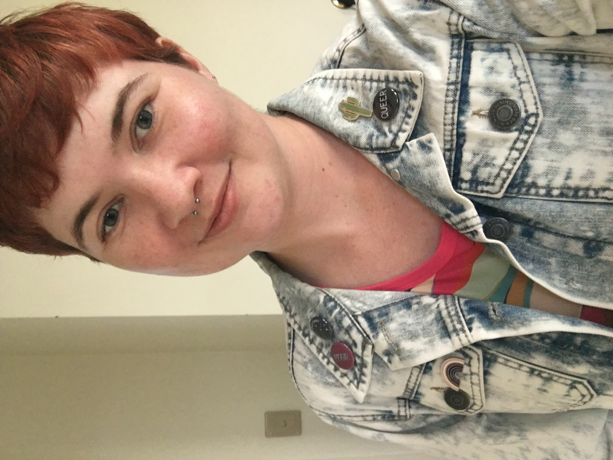

Kia ora!
My name is Hannah, and I'm joining Dev Academy Aotearoa from Tāmaki Makaurau Auckland. Previously I worked in the contemporary arts sector as a coordinator, after completing a postgraduate degree in Art History. It was through my time in the arts that I had the opportunity to work on building and maintaining a Wordpress website, and discovered my love for creating through code.
My goal when I graduate from Dev Academy is to work in the industry as a web developer, making and maintaining websites for clients and working as part of a development team. I love the opportunity to dive into a new challenge headfirst, learning as much as I can along the way. Alongside my previous work on websites, I had the pleasure of installing a lot of different audiovisual artworks for artists and project managed overall exhibition changeovers.
In my spare time I love being outdoors, cooking new things, knitting, heading out on the water and visiting art galleries.
 Find me on GitHub!
Find me on GitHub!